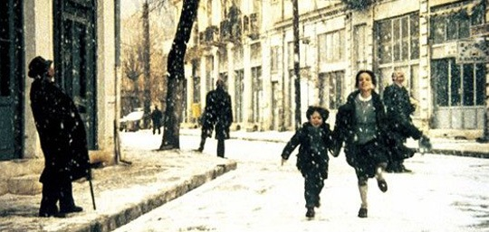

《雾中风景》躺在我的电脑中已有一段时日。西奥.安哲罗普洛斯的电影，我知道，需要找一个内心安静的时候来看。在此之前，我并没有看过他的电影，只略微知道他是“希腊电影之父”，略微知道，很多人讲“诗意电影”的时候会提到他。参加这次活动之前，本打算以“诗意电影”作为影评部分的大标题，但总觉得现在谈“诗意”是会被人觉得作和可笑的，于是在发布的时候，便没有了大标题。《雾中风景》便是在那个时候下的。 两个孩子犹豫再三，终于鼓起勇气去寻找他们不可能找到的父亲，路途上遭遇了各种各样成人世界的残酷。孩子说“这真是一个奇怪的世界。一大堆的公文包，冷死人的火车站。好多好多我们听不懂的话看不懂的手势，还有吓死人的晚上”。是啊，在这样诺大的世界里，他们是如此渺小，那么多高耸入云的烟囱，巨大的机器轰鸣着，像要把他们吞噬掉。孩子一开始是那样脆弱，害怕黑暗，在火车车厢的角落里瑟缩着，跟想象中的父亲说话。5岁的弟弟为垂死的马痛哭，而在他们身后却是一场欢快的婚礼。那时的他们还完全不能理解这个世界的矛盾和生死的含义。而最后，12岁的姐姐已经懂得怎样同陌生的男人交易。这样的成长只让人觉得揪心。最后，他们在迷雾里偷了别人的小船，驶向未知的那片土地。我们听见了枪声，然后，也是最后，孩子们上岸，透过迷雾，看见了一棵树。
一场希腊悲剧式的电影。希腊雕像般定格的人群。大量的长镜头静态全景和人物跟拍，真实地让人窒息。最让人痛苦的莫过于姐姐维拉被卡车司机强暴的那场戏。白天，卡车黑色的帘子里，一切都那样安静，只有来往的汽车声，还有最后醒来的弟弟发现姐姐不见了时急切的呼唤声。然后维拉慢慢从帘子背后钻出来，坐在卡车边缘，手从两腿中移出来，全是血，她只是呆呆地望着满手的血，然后无力的在卡车内壁上擦着。现实的残酷就这样将孩子侵吞了。 安哲曾在采访中说，最初的结局不是透过迷雾看见树，而是让两个小孩消失在雾中。但他把剧本拿给七岁的女儿看，看到最后，她哭了。她问：“父亲在哪里？家在哪里？”于是他做了改变，让树出现，让小孩抱着树。就像圣经中，上帝创造的第一棵树。那么他就可以对孩子说：“如果你愿意，你可以重新创造这世界。就像这样，手轻轻一挥，雾就会消失。”“这是特别为我女儿而做的。”但即使是这样，也是残酷的。因为我们分明已经听到了枪声。或者树只是他们到了天堂看到的幻影。 《雾中风景》是安哲“沉默三部曲”的最后一部，之前两部《塞瑟岛之旅》和《养蜂人》同样是关于旅行和寻找。其实我们都是混沌世界里的旅者，我们常感失落，所以我们便要寻找，离开便是一种回归。从一出生就上路，直到走向天堂。